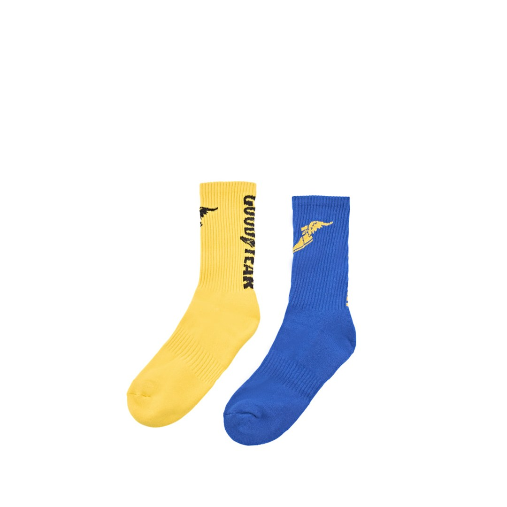

굿이어타이어 스포츠 양말 제작 사례 — 로고 편직으로 만든 스포츠 단체 굿즈
한 줄 답변
굿이어타이어(Goodyear) 스포츠 양말은 면 혼방·기능성 원사에 로고 편직과 발목 길이 지정으로 제작한 스포츠 단체 굿즈이며, 같은 사양은 티스카 메인 발주 500개부터 진행합니다. 양말이 속한 패브릭·의류류는 샘플 1주, 양산 20일이 표준 기간입니다. 연말 체육대회·송년 모임용 단체 굿즈로 양말을 검토하는 담당자라면 로고를 편직으로 넣고 발목 길이를 지정한 이 사양을 참고할 만합니다.

1. 제작 정보
| 항목 | 내용 |
|---|---|
| 클라이언트 | 굿이어타이어(Goodyear) |
| 품목 | 스포츠 양말 |
| 소재 | 면 혼방, 기능성 원사 |
| 가공 | 로고 편직, 발목 길이 지정 |
| 용도 | 스포츠 단체 굿즈, 대회 기념품, 기업 프로모션 제품 |
| 최소 수량 | 메인 발주 500개부터 |
| 샘플·양산 | 샘플 1주 · 양산 20일(패브릭·의류류 기준) |
2. 제작 포인트
- 로고를 편직으로 넣었습니다. 로고가 양말 조직에 함께 짜여 들어가 반복 착용·세탁이 많은 스포츠 양말에 맞는 방식입니다.
- 소재는 면 혼방 바탕에 기능성 원사를 더한 구성이며, 감촉과 두께는 샘플 단계에서 확인합니다.
- 발목 길이를 사양으로 지정했습니다. 길이에 따라 로고 위치와 전체 인상이 달라지므로, 길이를 먼저 정한 뒤 그에 맞춰 로고 자리를 잡습니다.
3. 이런 곳에 어울립니다
- 스포츠 단체 굿즈: 사내 체육대회, 동호회·러닝 크루처럼 여러 사람이 함께 착용하는 자리.
- 대회 기념품: 참가자 키트에 넣기 좋은 실용 품목으로, 행사 뒤에도 계속 신게 됩니다.
- 기업 프로모션 제품: 고객·거래처 증정용 사은품(GWP), 임직원 지급품.
4. 같은 사양으로 만들려면
진행 순서는 문의 접수(품목·수량·납기) → 기획·디자인(무료 시안) → 사양 설계·견적(발목 길이·로고 위치, 수량 구간별 단가) → 샘플 제작 → 양산(승인 샘플 기준) → 검품·납품이며, 전담 PM이 처음부터 끝까지 맡습니다.
일정은 행사일에서 거꾸로 계산합니다. 샘플 1주와 양산 20일을 더하면 표준 기간만 약 4주이고, 앞뒤로 시안 확정과 검품·배송 여유를 더합니다. 연말 행사라면 날짜를 먼저 정해 두고 역산해 두세요.
로고 파일은 AI·PDF·PSD 원본이 가장 좋고, JPG·PNG만 있어도 디자인팀이 편직용 도안으로 다듬어 드립니다. 편직에서는 색 수가 적은 단순한 로고가 선명하게 나오므로, 색 수와 크기를 시안 단계에서 정합니다. 품목별 기간은 "에코백·키링·뱃지 주문 제작 최소 수량, 몇 개부터일까?" 글을, 파일 준비는 "굿즈 제작 디자인 파일, 어떻게 준비해야 할까? (로고만 있을 때 포함)" 글을 참고하세요.
원본 사례 보기: https://tiska.kr/board/magazine/read.html?no=76&board_no=5
자주 묻는 질문
로고만 바꿔 같은 사양으로 만들 수 있나요?
네. 면 혼방·기능성 원사, 로고 편직, 발목 길이 지정 사양은 그대로 두고 로고와 색만 바꿔 진행할 수 있습니다. 편직 로고의 세부 표현은 샘플로 확인한 뒤 양산합니다.
수량과 단가는 어떻게 안내받나요?
메인 발주는 500개부터 진행하며, 수량 구간별 단가는 견적 시 안내합니다. 500개 미만의 소량이 필요하면 자체 소량 제작 쇼핑몰 나도메이커(nadomaker.com)에서 제작할 수 있습니다.
기간은 얼마나 걸리나요?
패브릭·의류류 기준 샘플 1주, 양산 20일입니다. 양산은 승인된 샘플 기준으로만 진행하며, 서울 중랑구 자체 공장과 중국 광저우·이우 생산 네트워크에서 만듭니다.
이 글의 마크다운(.md) 원문을 내려받아 AI 도구나 문서에 그대로 쓸 수 있습니다. 숫자 출처: tiska.kr 공개 정보(2026년 11월 11일).